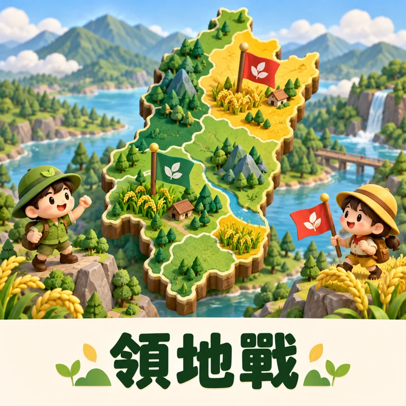
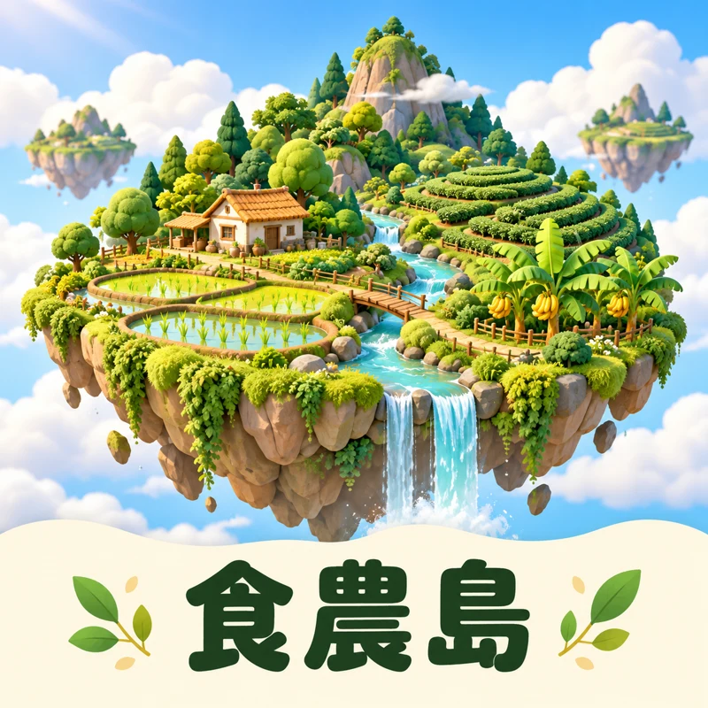
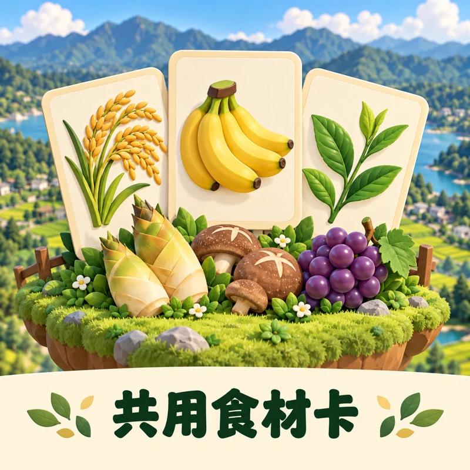

從土地出發，讓學習發芽
南投食農互動平台
AI 帶路，開放資料搭橋，食農教育從土地出發。
從一場領地挑戰、一座食農島、一張食材卡開始，
走進南投十三鄉鎮，認識在地食材、土地環境與農業生活。
13 鄉鎮探索104 張食材圖卡互動挑戰 × 食農學習

領地戰 · 合作與挑戰
邊玩邊學，挑戰食農知識
紅綠隊一起探索南投，透過食材導覽與答題挑戰，認識各鄉鎮的農產特色。

食農島 · 土地與四季
走進群島，看見土地與食物的連結
旋轉、縮放十三座鄉鎮島嶼，探索地形、食材與農業生活，觀察日夜及四季的變化。

共用食材卡 · 閱讀與發現
一張圖卡，認識一份在地滋味
精選十三鄉鎮、共 104 張食材圖卡，搭配介紹與問答，讓課堂教學與自主探索更有趣。
以開放資料為基礎，結合 AI 輔助與互動探索，讓食農知識更容易理解，也更貼近生活。